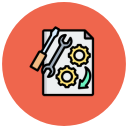

Acerca de mí

Soy un Ingeniero de Sistemas en formación con una sólida experiencia en calidad de software, donde combino habilidades técnicas y metodológicas para desarrollar soluciones confiables y eficientes. Me especializo en la captura de requerimientos, diseño y ejecución de pruebas, además de manejar herramientas clave y metodologías ágiles que optimizan los procesos. Mi enfoque en la mejora continua y mi capacidad de liderazgo me permiten trabajar en equipo para alcanzar resultados excepcionales, siempre impulsando la calidad y la innovación tecnológica.
Pruebas Funcionales
80%
Calidad de software
80%
Pruebas de móvil
75%
Bases de datos
70%
Gestión documental
75%
Metodologías Ágiles
75%
Mejora contínua
65%
Automatización de pruebas
60%

Experiencia
Con más de 6 años de trayectoria, he participado en proyectos enfocados en garantizar la calidad de aplicaciones web y móviles, desde la definición de requerimientos hasta la validación en entornos de producción. Mi trabajo incluye la realización de pruebas funcionales y no funcionales, consultas y análisis de bases de datos SQL, y el manejo de herramientas como Robot Framework, APIs, Jira y Azure DevOps. También he implementado prácticas ágiles como Scrum y BDD para mejorar la colaboración y los resultados del equipo, destacándome por mi capacidad para resolver problemas técnicos y optimizar procesos clave en el desarrollo de software.
{kind=link}
{kind=link}
{kind=link}
Servicios
Ofrezco servicios especializados en calidad de software, que incluyen la captura y análisis de requerimientos, diseño y ejecución de pruebas funcionales y no funcionales, y automatización de procesos utilizando herramientas como Robot Framework y APIs. Tengo experiencia en validación de bases de datos SQL, gestión de calidad mediante metodologías ágiles como Scrum y BDD, y manejo de plataformas como Jira, Azure DevOps y Test Link. Además, realizo pruebas en entornos de producción para garantizar la confiabilidad del software y lidero equipos pequeños para asegurar la alineación con los objetivos del proyecto. También brindo consultoría estratégica para optimizar procesos de aseguramiento de calidad y garantizar entregas exitosas.
Pruebas Funcionales
Garantizamos que las aplicaciones funcionen según lo esperado, alineadas con los requisitos del cliente.
Automatización de Pruebas
Optimizamos las pruebas mediante scripts automatizados para mayor eficiencia y cobertura.

Pruebas de Aceptación
Validamos que el software cumpla con los requisitos del negocio a través de pruebas finales con usuarios clave.
Pruebas Cross-Browser
Aseguramos la compatibilidad de las aplicaciones en múltiples navegadores y dispositivos.

Documentación Técnica
Elaboramos y mantenemos documentación clara y detallada sobre los procesos de pruebas y resultados, facilitando la comprensión y seguimiento del proyecto.
Gestión de la Calidad y Cumplimiento
Implementamos estrategias de calidad que garantizan el cumplimiento de estándares y la mejora continua en el ciclo de vida del software.